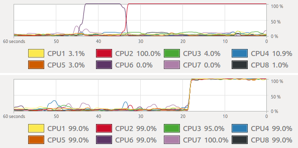

Parallel processing and HPC
Anna Petrasova, Vaclav Petras, Helena Mitasova
GIS714 Geosimulations
Parallelization in geospatial context
- Just because your computer has many CPUs, that doesn't mean a computation uses them
- Implementing parallel computing with CPUs can be done on the level of algorithm or user level

Parallelization approaches in geospatial context
- Embarassingly parallel problems — independent computations (e.g., solar radiation for more days)
- Tiling approach — divide spatial domain into tiles possibly with overlaps (e.g., interpolation)
- Complex approaches — depend on algorithms, often use tiling with communication between tiles (e.g., hydrology)

Notes on parallelization
Good news:
- Many problems fall into first two categories
- It's fairly easy for users to parallelize their computations using Python, or background processing
Problems:
- Overhead can cause a program to run slower than on one CPU (running on n CPUs does not mean n-times speed-up)
- We might not have enough memory for all processes
Parallel computing infrastructure (1)
- laptop (8 CPUs) — for individuals
- desktop/server (tens of CPUs)
- typically remote access, but physical machine is accessible
- hardware owned by organizations, companies

Parallel computing infrastructure (2)
- cloud (tens of CPUs)
- connected computers, actual hardware/OS hidden through virtualization
- easy to setup from user point of view
- computing is often not the primary application
- e.g., NCSU VCL, Amazon Web Services
Parallel computing infrastructure (3)
- HPC, supercomputers (thousands of CPUs)
- connected nodes, unix-based OS (e.g., Linux)
- not all programs can take advantage of it
- e.g., NCSU HPC: Henry2
Supercomputer Blue Waters, NCSA, Illinois
When to use HPC?
- Computation takes a looong time (hours/days) on your machine.
- Computation requires more memory than you have (e.g., more than 32GB)
- Computation uses big data from Research storage
- When you don't want to overheat your hardware
- When your computation takes advantage of many cores
When not to use HPC?
- long running script accessing internet
- prototyping workflow
- when you use software that is not available on HPC (e.g., non-open source software)